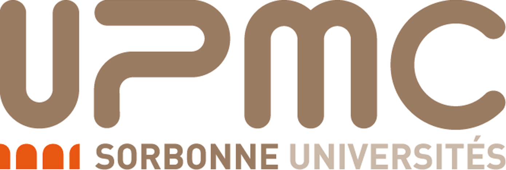
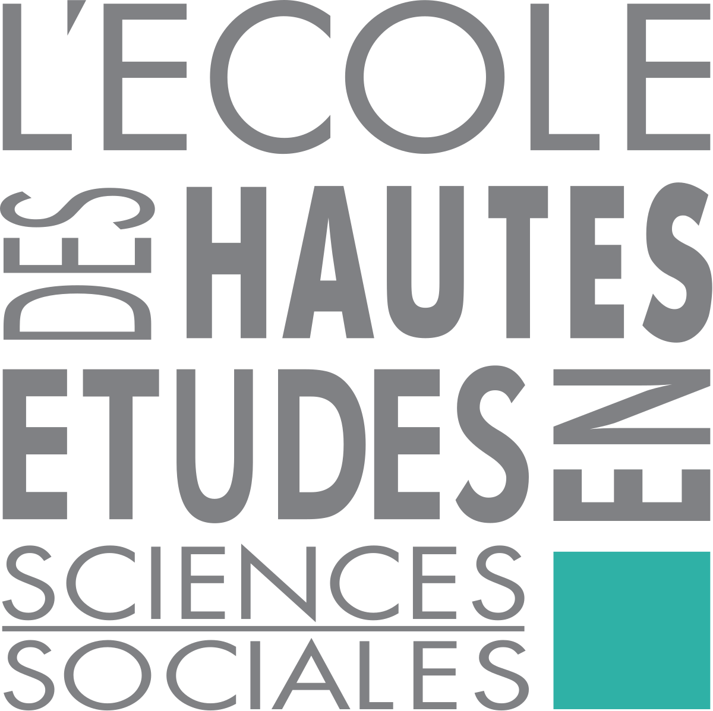
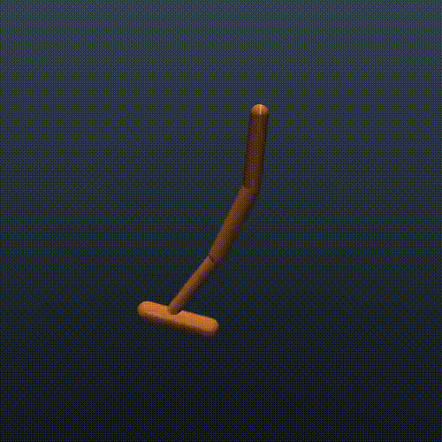
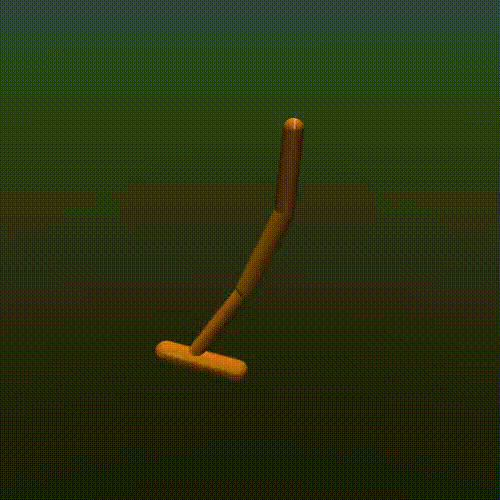

|
|
Fabio Pardo
PhD Student in Machine Learning
Imperial College London
London, SW7 1NA
United Kingdom
f.pardo[at]imperial.ac.uk


|
I am a second-year PhD student in Machine Learning at Imperial College London.
My main research focuses on Deep Reinforcement Learning.
Education

|
2016 – present:
PhD in Machine Learning (Deep Reinforcement Learning)
@ Imperial College, London, UK
|
|

|
2014 – 2015:
Master's degree in Computer Science (AI, ML, Robotics)
@ Pierre et Marie Curie University, Paris, France
|
|

|
2012 – 2014:
Master’s degree in Cognitive Science (Neuroscience, Cognitive Psychology, Computational Modeling, Neuroimaging, AI)
@ École Normale Supérieure, EHESS and Descartes University, Paris, France
|
Competition
|
|
2011 and 2012:
Finalist of the French national AI contest (2 algorithmic selection steps and 36h of programming)
@ École Polytechnique and EPITA, Palaiseau and Paris, France
|
|

 
